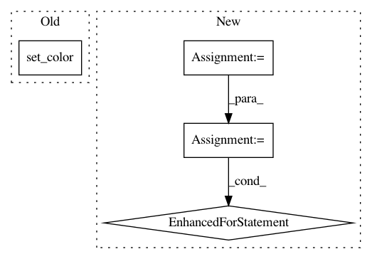

a3ff917fc04ae0199b051b1d0cc2f75c3700191a,deeplabcut/utils/visualization.py,,make_labeled_images_from_dataframe,#Any#Any#Any#Any#Any#Any#Any#Any#,195
Before Change
scat = ax.scatter(
[], [], s=cfg["dotsize"], alpha=cfg["alphavalue"], marker=keypoint
)
scat.set_color(colors)
coll = LineCollection([], colors=cfg["skeleton_color"], alpha=cfg["alphavalue"])
ax.add_collection(coll)
for i in trange(len(ic)):
filename = ic.files[i]
After Change
segs = xy[:, ind_bones].swapaxes(1, 2)
s = cfg["dotsize"]
alpha = cfg["alphavalue"]
if all_same_shape: // Very efficient, avoid re-drawing the whole plot
fig, ax = prepare_figure_axes(w, h, scale, dpi)
im = ax.imshow(np.zeros((h, w)), "gray")
pts = [ax.plot([], [], keypoint, ms=s, alpha=alpha, color=c)[0] for c in colors]
coll = LineCollection([], colors=cfg["skeleton_color"], alpha=alpha)
ax.add_collection(coll)
for i in trange(len(ic)):
filename = ic.files[i]
ind = images_list.index(filename)
coords = xy[ind]
im.set_data(color.gray2rgb(ic[i]))
for pt, coord in zip(pts, coords):
pt.set_data(*coord)
if ind_bones:
coll.set_segments(segs[ind])
imagename = os.path.basename(filename)
fig.subplots_adjust(left=0, bottom=0, right=1, top=1, wspace=0, hspace=0)
In pattern: SUPERPATTERN
Frequency: 3
Non-data size: 4
Instances
Project Name: AlexEMG/DeepLabCut
Commit Name: a3ff917fc04ae0199b051b1d0cc2f75c3700191a
Time: 2020-09-01
Author: 30733203+jeylau@users.noreply.github.com
File Name: deeplabcut/utils/visualization.py
Class Name:
Method Name: make_labeled_images_from_dataframe
Project Name: mne-tools/mne-python
Commit Name: 38f3c2bc34a604d4f39c88697e846389581ea50e
Time: 2020-08-04
Author: larson.eric.d@gmail.com
File Name: mne/viz/raw.py
Class Name:
Method Name: _plot_raw_traces
Project Name: biotite-dev/biotite
Commit Name: 8974738aa3f737631e878fdc8990aff502dde808
Time: 2020-07-07
Author: patrick.kunzm@gmail.com
File Name: doc/examples/scripts/structure/contact_sites_pymol.py
Class Name:
Method Name: